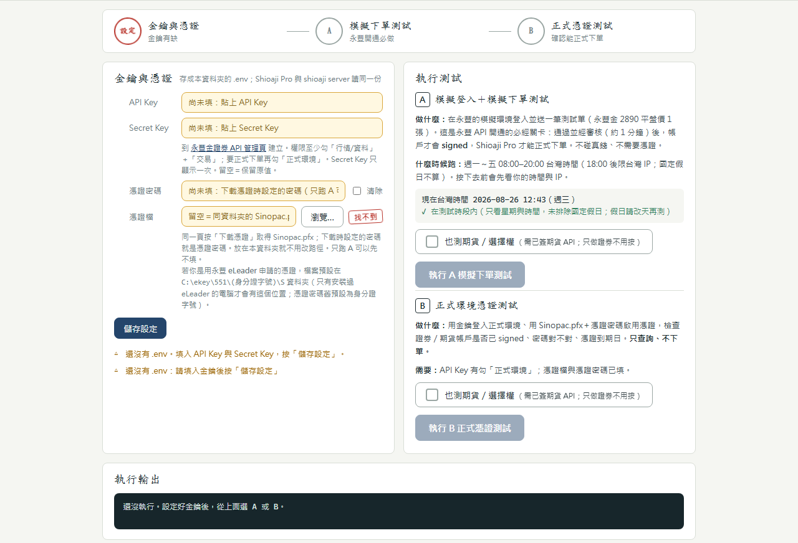

填入 API 金鑰與憑證，一鍵跑完永豐 API 開通必經的「模擬下單測試」與「正式環境憑證測試」，逐項列出 ✓／✗ 與原因。不用裝 Python、不用打指令，解壓即用。
按一顆按鈕就跑完整套測試，畫面列出每一步 ✓／✗／－ 與原因；卡在哪一欄，欄位前的圓圈直接標給你看。
全程本機執行，只連永豐官方 API。所有輸出與匯出的除錯紀錄都自動遮罩金鑰與身分證字號；Secret Key 驗證通過後自動鎖定，不怕誤觸改掉。
金鑰與憑證路徑存成程式同層的 .env，欄位名稱與 Shioaji Pro／shioaji server 相同，測通後其他工具直接讀同一份。
內建 Python 與所有套件，解壓後資料夾只看得到 wizard.exe。用 Windows 內建的 Edge 開視窗，關窗即完全結束。

永豐要求先在模擬環境完成下單測試，簽署後才開放正式環境；憑證則要在正式環境驗證能否簽章。精靈把兩段各拆成獨立檢核項目。
執行前自動檢查台灣時間（週一～五 08:00–20:00）；通過並經永豐審核後帳戶才會 signed，未通過的項目會附永豐簽署頁連結，點一下就開。
密碼錯、路徑錯、金鑰打錯字，各自會有明確的中文原因，不用看英文錯誤訊息猜。
wizard.exe，其餘程式檔案已隱藏。C:\ekey\551\… 並提供一鍵帶入）。＞ 金鑰在永豐「API 申請」頁面產生；Secret Key 只會顯示一次，請先存好再貼進精靈。
下載或使用本軟體前請先讀完；繼續使用即表示你同意以下條款。
.env；測試時由本機子行程讀取、交給永豐官方 shioaji SDK 以加密連線（HTTPS）連永豐伺服器。本軟體不會把金鑰、憑證或帳號資料送到永豐以外的伺服器，開發者也無從取得。唯一的第三方連線：週一～五 18:00–20:00（永豐限台灣 IP 的時段）開啟程式或執行 A 時，會向 ipinfo.io 查詢你的公網 IP 所屬國家、提醒你測試是否會被採計。ipinfo.io 因此會收到你的公網 IP（任何網路請求都會帶的資訊）並回傳 IP 與國家；這個請求不會送出 API 金鑰、憑證、密碼或帳號資料。.env 與 Sinopac.pfx 是明文檔案，請勿分享、上傳或放進雲端同步資料夾；本軟體與開發者不負任何金鑰（token）／憑證保管責任。若不放心，測試完成後可到永豐 API 管理頁重新產生金鑰。＞ 原始碼公開於 GitHub，安全設計細節見 README「安全與免責聲明」。
從網路下載的檔案帶有「來源標記」（Mark of the Web），部分解壓縮軟體會把它套到解出來的 exe；「仍要執行」只對當次有效，所以會反覆跳。擇一根治：
• 對現在這一份：在 wizard.exe 上按右鍵 → 內容 → 勾「解除封鎖」→ 確定。
• 下次下載時：先在下載的 .zip 上按右鍵 → 內容 → 勾「解除封鎖」→ 確定，再解壓，解出來的檔案就是乾淨的。
不用。資料夾內已內建 Python 與全部套件；只需要 Windows 10／11（x64）與內建的 Microsoft Edge（或 Google Chrome）。
請不要。同步軟體可能鎖檔或延遲寫入，造成 .env 或憑證讀取失敗。放在本機一般資料夾（例如桌面或「文件」）即可。
畫面上按「匯出除錯紀錄」，會在同資料夾產生 shioaji_wizard-debug-*.log（金鑰全文遮罩、身分證字號只留頭尾），到 GitHub Issues 附上即可。
若視窗根本開不起來，雙擊資料夾內的 啟動（除錯）.bat 可看到即時錯誤訊息。
用 Windows 檔案總管「解壓縮全部」會保留隱藏屬性；某些工具不會，這不影響運作，第一次啟動 wizard.exe 後就會自動隱藏。